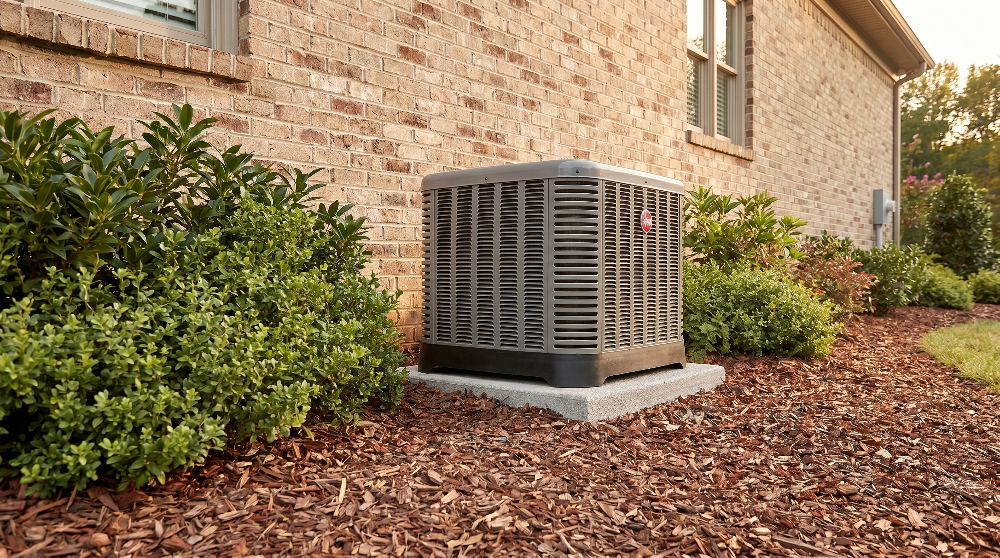
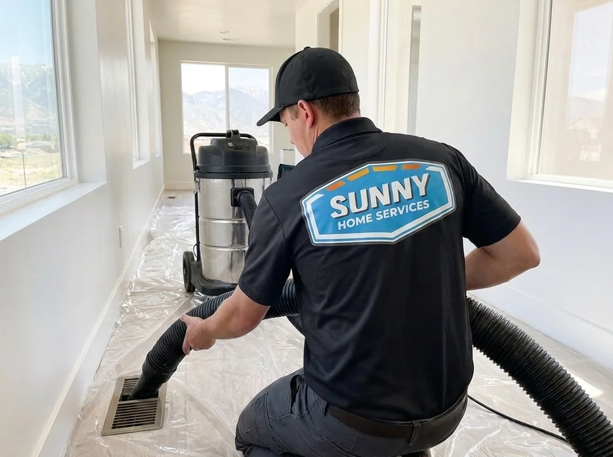
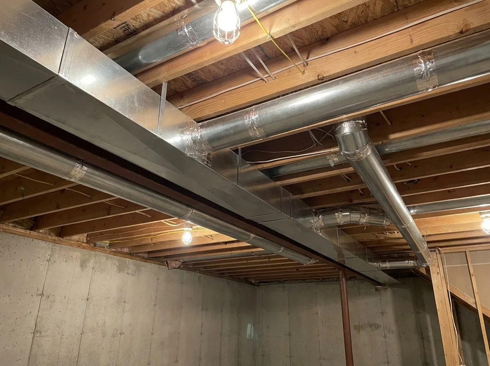
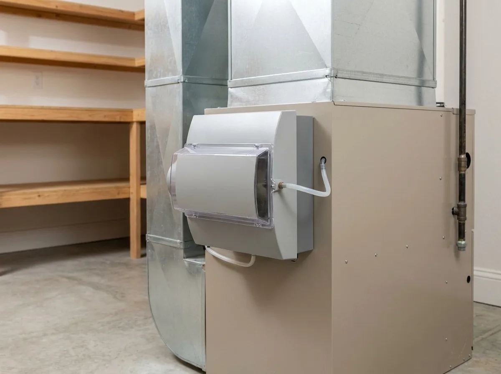
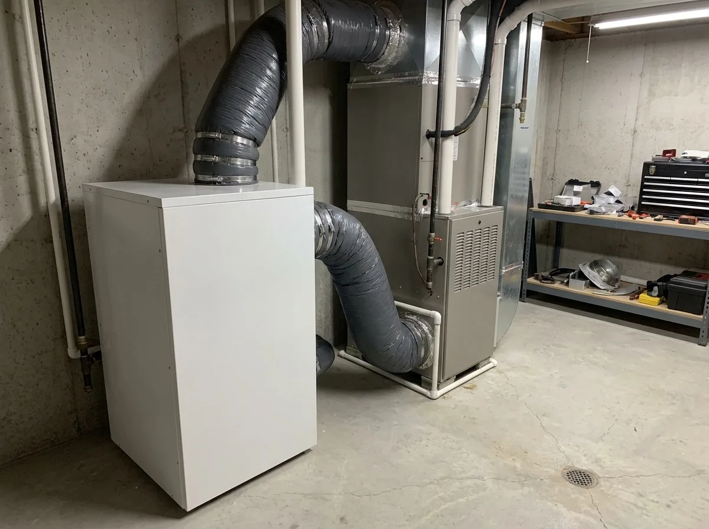
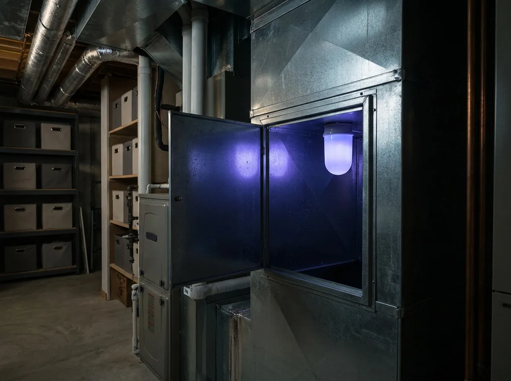

The unusual, bowl-like geography combined with emissions from vehicles, industry, and wildfires makes the air quality in the Wasatch Front challenging. If you’re looking for ways to improve indoor air quality on the Wasatch Front, the experts at Sunny Home Services have solutions. From air quality testing and whole-home air filtration systems to humidifiers, we offer a wide range of IAQ services designed to improve your health and home environment.
Smoke from wildfires near the Wasatch Front region can produce particulate matter that gets into the air, while the bright sunshine in our region and the unique geography contribute to ground-level ozone. Our professional indoor air quality (IAQ) services start with comprehensive home air quality testing. These test results inform our certified techs on how to develop a custom-tailored IAQ service that meets your home and family’s needs.

After thoroughly checking the indoor air quality of your home, we offer several professional IAQ solutions. With Sunny Home Services, homeowners in the Wasatch Front area get reliable options that are designed to last.

Our professional air duct cleaning service thoroughly removes pollen, dust mites, and pet dander from ductwork to keep your home free of a variety of common allergens and irritants. This service also helps to improve HVAC system efficiency by reducing strain and lowering your monthly energy bills. Routine air duct cleaning also keeps pests at bay for a safer home overall.
Learn More ›
If your current ductwork is loose, leaky, or damaged, we provide professional ductwork installation services to fix the issue. New ductwork that’s installed properly and free of gaps or holes ensures that the air circulating into your home is fresh and clean. Modern air ducts constructed of rigid metal help to prevent moisture buildup that encourages mold and mildew growth.
Learn More ›A whole-home air filtration system integrates directly into your HVAC equipment to provide consistent, reliable filtration. This advanced IAQ solution removes a range of airborne particles and pollutants, including pollen, mold spores, and biological pathogens. Not only is it highly effective at maintaining good air quality, but it also offers quiet operation and easy maintenance.
Learn More ›
Low outdoor humidity levels on the Wasatch Front can make the air inside your home uncomfortably dry. Installing a whole-house humidifier remedies this issue by adding moisture to treated air directly at the source. Unlike a standalone humidifier, whole-home humidifiers work to treat your entire home at once, preventing issues like sore throat, dry eyes, itchy skin, and other symptoms associated with dry air.
Learn More ›
A whole-house dehumidifier removes excess moisture from the air to prevent mold and mildew spores from growing and spreading. This IAQ solution also halts the reproduction of dust mites to provide relief to homeowners who suffer from asthma flare-ups. Lowering your home’s relative humidity also keeps temperatures more comfortable while reducing wear and tear on your HVAC system.
Learn More ›
Ultraviolet germicidal lights are installed in your HVAC air ducts or on the evaporator coils. These powerful lights neutralize airborne and surface pathogens by disrupting the DNA of mold spores, bacteria, and viruses. UV lights work very well for this purpose, but they don’t remove dust or odors.
Learn More ›If you live in Utah’s Wasatch Front area, you may encounter a range of indoor air quality issues. Here’s what our technicians typically see on the Wasatch Front homes:
To select the most effective IAQ solution for your household, we recommend scheduling a professional home IAQ testing and assessment with Sunny Home Services, which includes:
Wasatch Front homeowners choose Sunny Home Services for IAQ services because: